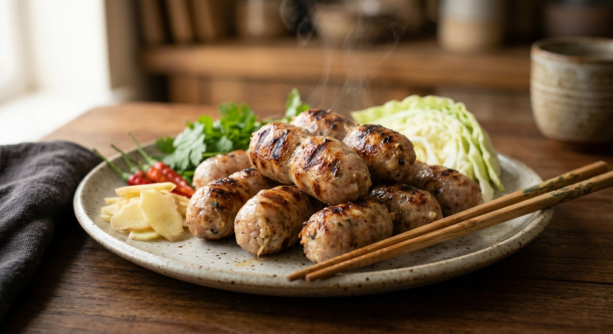

Pork, cooked rice, garlic and pepper stuffed into casings and hung until the lactobacillus does its work — then grilled low over charcoal and eaten with ginger, chillies and cabbage.

ไส้กรอกอีสาน is Thailand's fermented sausage, and its sourness is earned, not poured. Starup Foods, a Thai producer, lays out the chemistry: lactobacillus bacteria eat the sugar in the meat and churn out lactic acid until the pH drops to 4.3–4.7 — the sour is fermentation, never vinegar, and that is what separates it from a frankfurter. The bacteria's food is the cooked rice and the garlic, which is why every Thai source stuffs both into the casings along with the pork.
It is also a regional dialect. Starup maps it: Khon Kaen's version is fiercely sour, Sakon Nakhon's is sweet-sour, Nakhon Phanom's is balanced — and the border runs through the filling. The rice belt (Khon Kaen, Loei) uses sticky rice, up to a third of the meat's weight, so dense you can't see the grains; the noodle belt (Nakhon Phanom, Sakon Nakhon, Udon Thani) uses glass noodles, visible strands and bounce. Home cooks abroad use whatever rice is in the cupboard — tukata001, writing from America for Kapook, uses plain cooked rice and notes the only hard part is the stuffing.
The waiting is the recipe. Kapook hangs the links a day minimum, longer for more sour; TrueID's selling batch sun-dries them one to two days; Aroifin's commercial batch skips the sun entirely with a hot-air oven at 50°C for three hours; Starup ferments at 28–32°C with a strict ceiling of 72 hours, after which the sour turns harsh and bitter. Then the grill: low flame, constant turning, a sharp stick to prick the skin so the air escapes and the links don't burst — Angkhana, whose glass-noodle version has 227,000 reads, insists on charcoal, because the smoke is the point.
| Thai | English | Amount |
|---|---|---|
| หมูและมันหมู | Pork with fat, minced | 1 kg |
| ข้าวสุก | Cooked rice, cooled | 2 cups |
| ไส้หมู | Pork casings | 100 g |
| รากผักชี | Coriander roots | 3 |
| กระเทียม | Garlic | 20 cloves |
| พริกไทยดำ | Black peppercorns | 1 tbsp |
| พริกไทยขาว | White peppercorns | 1 tbsp |
| น้ำตาลทราย | Sugar | 1 tbsp |
| เกลือ | Salt | ½ tbsp |
| ผงปรุงรส | Seasoning powder | 2 tbsp |
| ผักสด ขิงสด พริกขี้หนู | Fresh vegetables, fresh ginger, bird's eye chillies | to serve |
The selling batch (TrueID, แม่ซี): 800 g fatty minced pork plus 500 g finely chopped hard back fat, 125 g garlic, 200 g cooked jasmine rice, oyster sauce, MSG and pork seasoning powder — sun-dried 1–2 days, tied with twine (never straw string), grilled on skewers. The food-science batch (Starup Foods): for 1 kg — 700 g pork hip or shoulder, 250 g cooked sticky rice (or 200 g glass noodles), 30 g garlic, 15 g sugar, 18 g salt, 3 g pepper, 5 g coriander root, optionally 5 g fermentation starter or a teaspoon of raw rice pounded in water; fridge-rested 4–6 hours, then fermented 24–48 hours at 28–32°C. The commercial batch (Aroifin): 4 kg pork loin, 2 kg hard fat, 5 kg cooked rice and 2 kg glass noodles in one mix, stuffed by machine and dried 3 hours in a 50°C hot-air oven — with a warning to add no water at all, or the sausage turns wet and smelly.
The grain. Vanena and Starup's rice version use steamed sticky rice — up to 25–35% of the meat's weight. Kapook, TrueID and Aroifin use plain cooked rice (TrueID names it: ข้าวเจ้า, jasmine). Angkhana and Starup's noodle version use glass noodles (วุ้นเส้น), 15–20% of the meat. Aroifin and Angkhana put both rice and noodles in one batch. Starup explains the split: sticky rice is the Khon Kaen and Loei style, noodles the Nakhon Phanom, Sakon Nakhon and Udon Thani style.
How long to hang. Kapook: at least one day, longer for more sour. TrueID: 1–2 days in the sun. Vanena: one night in the fridge plus 1–2 hours of sun — the shortest of all. Aroifin: no sun at all, a 50°C oven for three hours. Starup: 24–48 hours at 28–32°C and 70–80% humidity, with a hard ceiling of 72 hours before the flavour turns bitter.
The fat. Kapook and Angkhana just use fatty pork. TrueID adds 500 g of finely chopped hard back fat on top of the fatty mince. Vanena adds boiled pork skin. Aroifin goes two parts loin to one part hard fat. Starup, the producer, works lean — hip or shoulder with an optional 50 g of fat.
The seasoning kit. Kapook and Vanena keep it minimal — salt, sugar, pepper, a little seasoning powder. TrueID, Angkhana and Aroifin add oyster sauce (and MSG, in the selling batches). Angkhana alone adds roasted ground coriander seed — her signature, a heaped spoonful.
The starter. Only Starup, the food-science source, adds a fermentation starter — commercial powder or a teaspoon of raw rice pounded in water — to seed the lactobacillus. Everyone else relies on the rice and garlic carrying it naturally, which they do.
The cooking. Kapook grills low with constant pricking; Angkhana wants charcoal, never electric; Starup allows deep-frying at 160–170°C for 5–7 minutes or a low charcoal flame for 8–10; Vanena says fry or grill; Aroifin steams the links first, then grills or fries.
The casings. Natural pork intestine (Kapook, Vanena, Angkhana) versus dried salted casings (TrueID) versus artificial casings (Aroifin) versus sheep or 22–26 mm collagen (Starup).
This recipe is translated from the following Thai-language sources. Where they disagree, we've said so.
1. Kapook — "ไส้กรอกอีสาน สูตรโฮมเมดเปรี้ยวนิด ๆ หอมกรุ่นจากเตา" by tukata001 (the recipe used here) — cooking.kapook.com
2. TrueID Food — "แจกสูตรทำ ไส้กรอกอีสาน เมนูทำขายสร้างอาชีพ หมูนุ่มชุ่มฉ่ำ อร่อยลงตัว!" by แม่ซี น้องมดดี้ (the selling batch) — food.trueid.net
3. Wongnai Community — "สูตร ไส้กรอกอีสาน" by Vanena Limpiyasrisakul (sticky rice and pork skin) — wongnai.com
4. Wongnai Community — "สูตร ไส้กรอกอีสานวุ้นเส้น" by Angkhana Schultheiss (the glass-noodle version, charcoal rule) — wongnai.com
5. Aroifin — "แจกสูตร 'ไส้กรอกอีสาน' ประหยัดต้นทุน ประหยัดเวลา" (the commercial batch, hot-air oven method) — aroifin.com
6. Starup Foods — "สูตรไส้กรอกอีสาน ทำเอง หมัก 1-2 วัน รสเปรี้ยวอีสานแท้" (the fermentation science, regional styles, 72-hour ceiling) — starupfoods.com